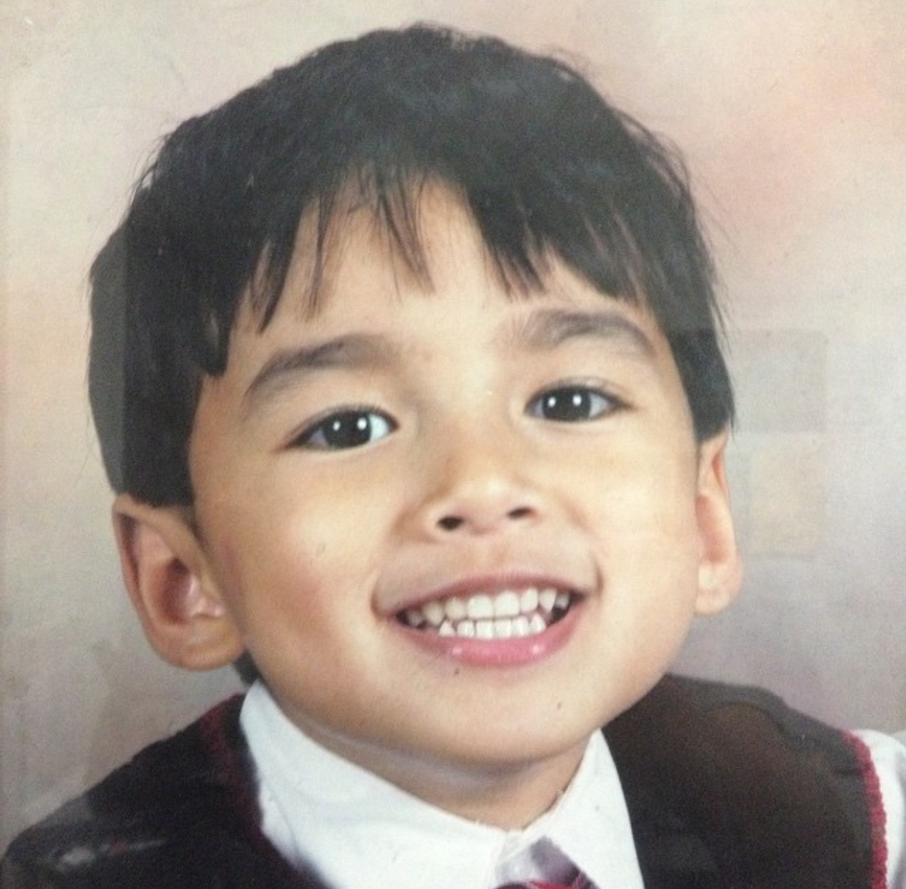
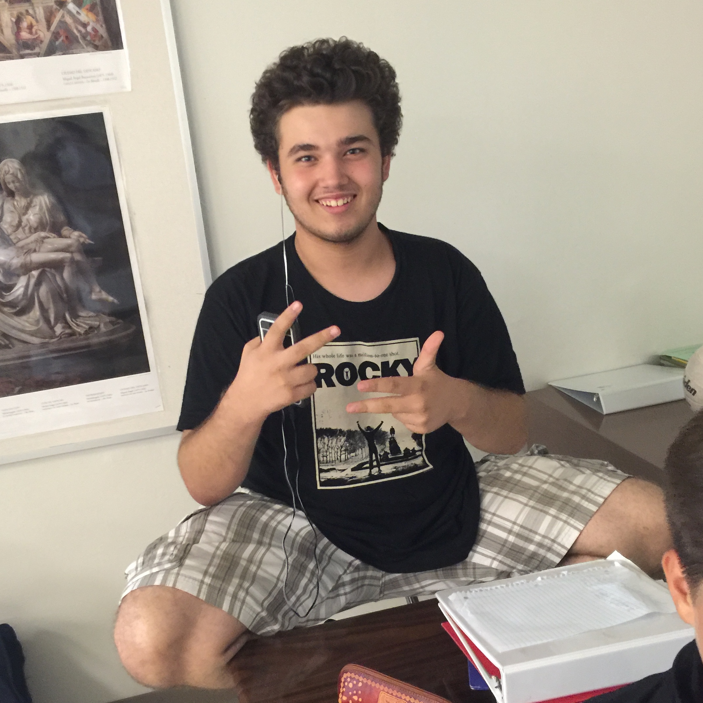
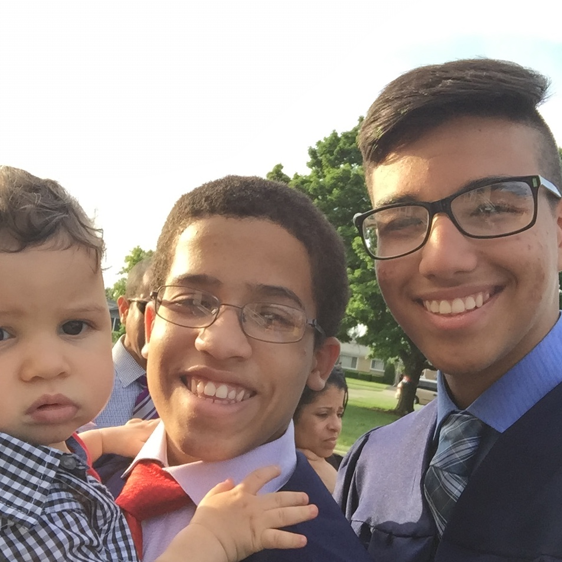
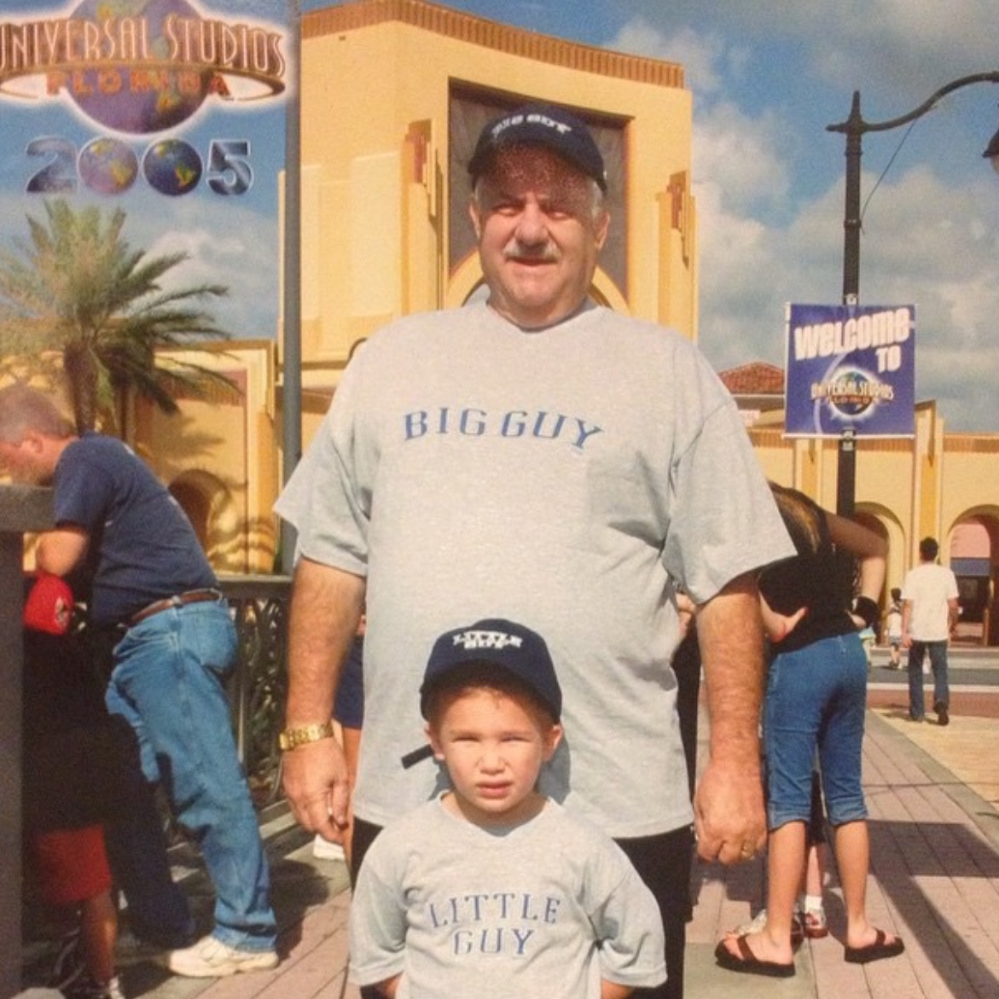

 Hussaini is one of the closest friends I've ever had in my life. We initially bonded over the simple things kindergarteners enjoy, such as food and games, but now we bond over things that High Schoolers enjoy, such as food and games. All Jokes aside, Hussaini and me have shared many good memories and have always had each other's backs. Good friends are always hard to come by, but ones like Hussaini are truly one in a million.
 Don't even get me started on Vlad. No single word can describe this guy. When I moved to Skokie at the end of 2013, I of course didn't have too many friends. I'm pretty social, so I made my way around the school decently well for the rest of the school year, but it wasn't until the year after that I started meeting my best friends from there. One of the first good friendships I developed was with Vlad, who had just moved as well. This guy is probably one of the smartest people I know, and also one of the most lovable guys too. He is a good kid, who hasn't always had the best life, but always pulled through whatever, and was always there to make you laugh.
Another good friend from Skokie is my friend Leander(the one holding the child of course, not the child himself). Leander Chappotin-Betancourt, in addition to having an astonishingly eccentric name, is quite an interesting guy. This man literally loves science. More specifically, genetics and biology. One of my favorite things about Leander is his uncanny ability to just spout ridiculously random facts about war or animals across the globe. One moment we'll be hanging out just trying to catch up to each other's lives, then a couple minutes later we'll be talking about how giraffes have no vocal chords. Every conversation with Leander is a wild one, but also some of the more enjoyable ones.
Last but certainly not least is Austin Tranchita. Me and Austin truly go waaaaaaaaaaayyyyy back, as far back as 2007 like Hussaini. Austin is one of the main reasons why I've accumulated so many fun memories in my childhood that weren't with my family. We've gone to see Seventh Heaven in Millenium Park (who I didn't know about at the time, but were pretty good), volunteered at a charity fashion show, sold soda tab bracelets at a market, had countless sleepovers, and have done so much more. I truly love Austin like a brother, and have been blessed to share many good times with him. My word of advice: Be friends with this guy, cause he's always bringing something new to the table, and life becomes a damn wild ride when he's there with you.